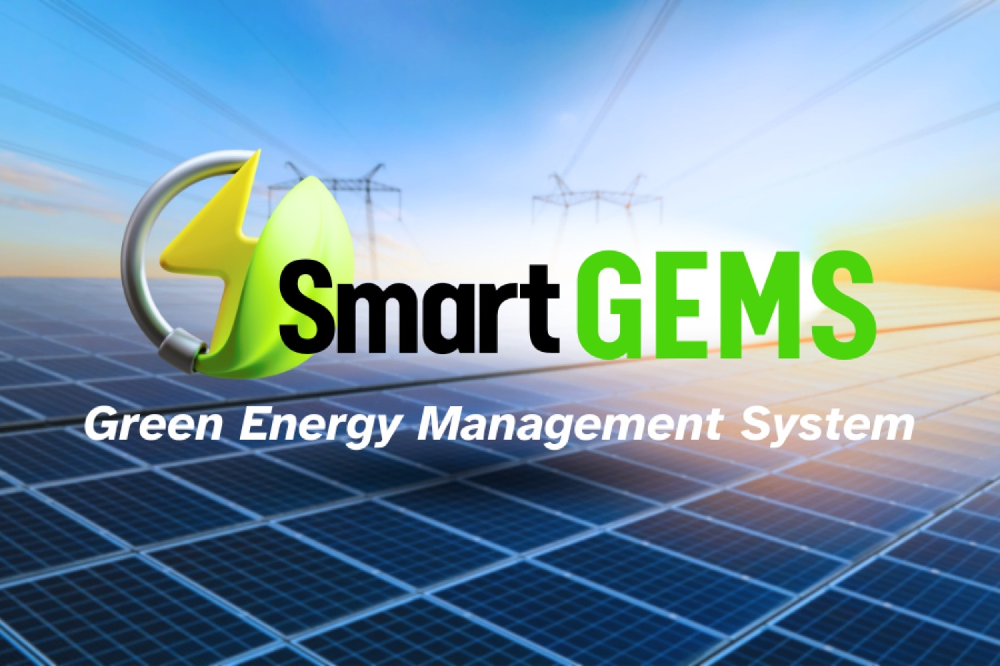
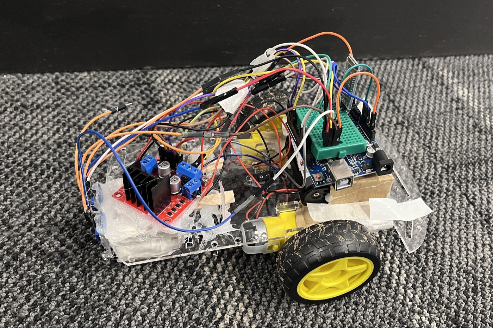
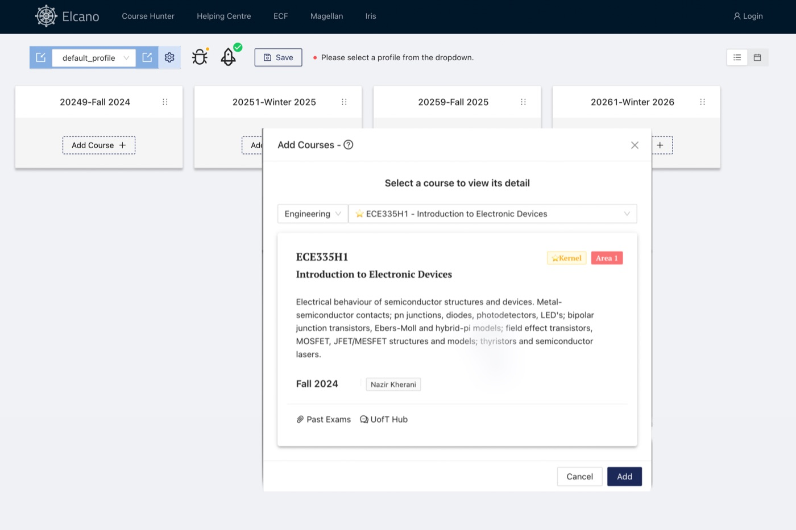

SpeechLink: ASR for dysarthric speech
Built in the RBC Let’s Solve It program. Fine-tuned OpenAI Whisper on the TORGO dataset, reducing word error rate from 1.73 to 0.30, an 80% improvement for speakers who are often misunderstood by voice tech.
01 — Engineering
From ML pipelines on factory-floor edge devices to a voice agent for emergency calls, I like taking models out of the notebook and making them dependable, fast and pleasant to use.
May 2025 — Aug 2026
Martinrea International · Vaughan, ON
May — Aug 2023
International Digital Economy Academy (IDEA) · Shenzhen
Built in the RBC Let’s Solve It program. Fine-tuned OpenAI Whisper on the TORGO dataset, reducing word error rate from 1.73 to 0.30, an 80% improvement for speakers who are often misunderstood by voice tech.
An automated voice guidance system for 911 calls that gives callers instant, accurate instructions while help is on the way. Built with the OpenAI API and AWS Connect; first place in Smart Cities at NewHacks 2023.

Optimizes energy source and distribution from real-time environmental conditions and power demand, keeping a renewable-heavy grid stable.

2nd of 35An Arduino rover built for the RSX SEEK 2023 competition, placing second overall among 35 teams.

A friendlier front end for UofT’s Magellan course-selection tool, making it easier for engineering students to plan their courses.
Machine learning
Software
Hardware